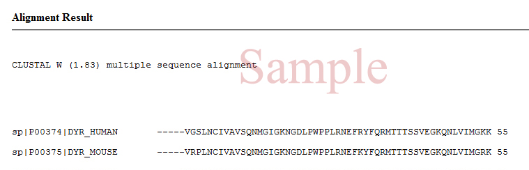
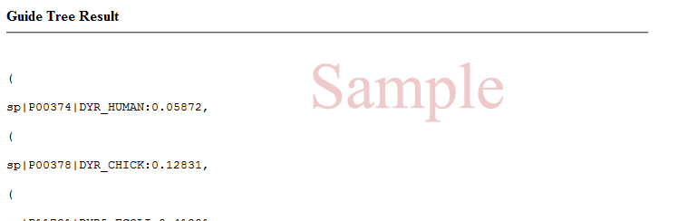
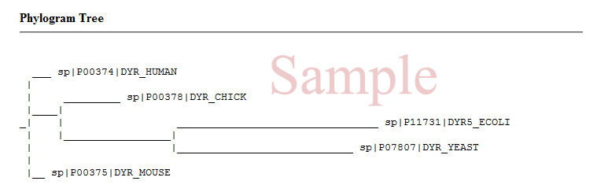

Application I/0¶
Note
Make sure that all Configurations and Testings are fine before you are going to Run Seq-Alignment (Application) on the web browser.
General Instructions¶
- As project is going through enhancement and still struggling to minimize errors, so its wise to follow the given instructions.
- Include a fasta file with correct format
- Dont paste fasta sequences in a random order.
- Output will be generated according to the weightage of a dataset, so please be patient untill the page will redirect
Input¶
- Seq-alignment supports pearson fasta format
- You can upload fasta file or paste fasta sequences in the web form
- Only one options is available to process at a time
Warning
Make sure you give valid fasta sequence type in order to get the phylogenetic result, else application will generate error.

Output¶
Note
After each task three files are generated:- .aln, .dnd, .xml in the project root directory.
The aboven given files :- alignment result, guide tree and phylogram tree are parsed in the display module.
  